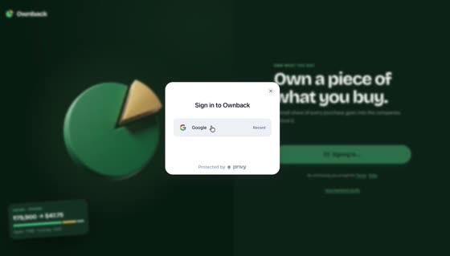
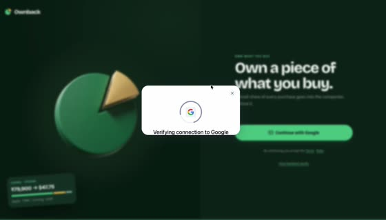
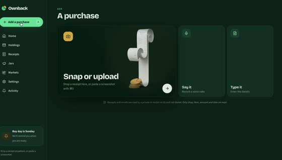
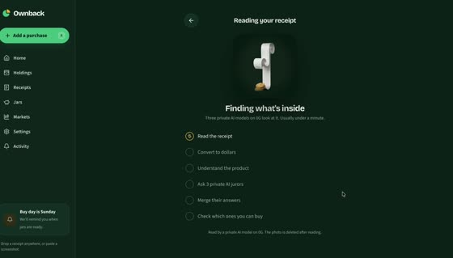
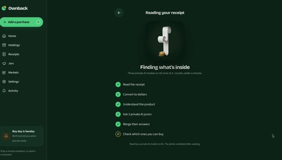
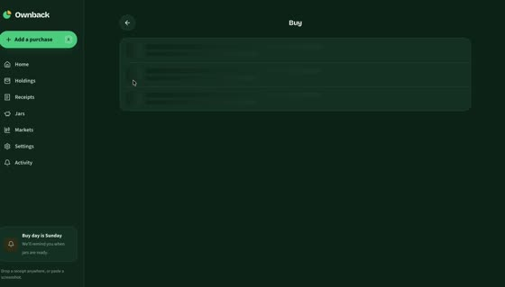

The ETHGlobal demo, built the way we built the intro: script first, then a sketch for every scene, then the voice, then the film rendered to the voice's own clock. It walks through the real app with a $100 wallet: a receipt read on 0G, $50 set aside for Apple, and a $50 buy signed into the user's own wallet. You narrate it.
1920×1080 · 30 fpsPace held at 155 words a minuteTimes below are planned; they are rewritten from the recorded voice
01Hook
02Sign in
03Snap and read
04Who is behind it
05Fifty into the Apple jar
06I sign the buy
07Signed and settled
08Built in Arc Studio
09Close
0:001:002:002:07.3
Record first, against a silent animatic
You narrate before the final film exists, but not blind. I first make a silent animatic: every scene on this board's clock with a teleprompter bar, so you can see what's on screen while you rehearse. Then you record at your own pace, I polish the takes, and the final film is cut to your voice. That keeps your delivery natural instead of chasing fixed timings, and every animation lands on your words. It also meets docs/09's “real voice” rule.
How we build it
You approve this boardScript, numbers and scenes are locked. Changes after recording cost a re-record.
I render the $50 screensA local-only route that mounts the real desktop app (same sidebar, dark theme, popups, loading states) on fixture data: $100 wallet, the ₹79,900 iPhone receipt, the $50 Apple jar, the 0.1433 AAPLx buy. I drive it with a script in the same 1414×806 window as your recording, with a drawn cursor, so a real clip and a demo clip cut together without a seam.
I make a silent animaticYour recording's clips (numbers edited where needed) and the rendered screens, cut on this board's clock, with a teleprompter bar showing the current line and how long it has. You rehearse to picture; nothing is final yet.
You recordLine by line, 2–3 takes each, slated (“line 7, take 2”). WAV, 48 kHz, 24-bit if you can, in a quiet, soft room, 15–20 cm from the mic. Start with 3 seconds of silence (room tone). Read naturally; you don't have to hit the timings.
I polish the narrationTranscribe every take and match it to the script; pick the best take per line on accuracy, pace and energy; remove noise using your room tone; tame harsh S's, keep natural breaths; even out levels; cut only in real pauses. You get a review sheet per line: pace, any misread or slurred word, any stall mid-phrase, and my pick.
You re-record flagged lines onlyUsually one round. You approve the edited voice track before any picture is cut to it.
I cut the film to your voiceScreens and animations fire on your words (snapped to where your voice actually starts).
I mix and checkMusic dips under whole sentences, effects only in pauses, loudness set. Checks: transcript in 20-second pieces, keyframe stills, length under 3:00, 1080p.
Publish and commitBoard and film updated at this link; committed straight to main.
The numbers
A $100 wallet and a $50 Apple buy. Every figure below comes from the one before it.
Step
Value
Why
Wallet before
$100.00 USDC on Arc
Already deposited; the deposit isn't shown.
Receipt
₹79,900 → $841.14
Your real iPhone 16 receipt, as the app itself converted it (rate on the receipt date, 7 Nov). Matches your recording at 3:58.
Suggested set-aside
5% = $42.06
Default rate in the app (range 2–10%).
Chosen
$50.00 → Apple jar
The user edits the amounts on Confirm; TSMC and Gold set to $0.
After saving
$50.00 free · $50.00 in the Apple jar
Arc gas is paid in USDC and is under a cent; the film rounds it away.
Price
AAPLx $348.51
AAPL's close on 10 Nov 2026; the film labels it an example price.
$50.00 USDC + $49.95 of Apple. The only cost is the $0.05 fee.
The rules it must meet
2 to 4 minutesETHGlobal's window. Target 2:50.
Under 3:00Required for the 0G prize (docs/09).
720p or better, no speed-upWe render 1080p at 30 fps. Nothing is sped up to fit.
NarratedETHGlobal rejects music with on-screen text in place of a voice.
Show it workingThe real app end to end (sign-in, receipt, approval, buy), not slides.
Partner proof on screen0G request ID (scene 3), Arkiv record (4, 7), Arc Studio (8).
What the intro taught us
Narration
Never cut a line on the transcript's word times. They run early or late, and in the intro they chopped 16 of 18 line endings mid-word. Cut only at passage joins and at real pauses found in the audio, with fades inside the silence.
Narration
Scan every take for pauses in the middle of a phrase before it is used. The clone stalled between “came” and “AirPods”; a check now flags any pause over 0.2 s that has no punctuation in the script.
Narration
Write for the voice model. Bracket tags such as [chuckle] were read aloud, and names were misheard, so spell them as said: Own-back, zero G, U S D C. Avoid “approve” at the end of a phrase (it came out as “a proof”).
Narration
Hold the pace at about 155 words a minute. The intro grew from 1:22 to 1:54 because nothing capped it. This film has a hard ceiling of 3:00 (0G's rule), so the script is 322 words, planned at 2:17 to leave room for natural pauses.
Sync
Fire each animation on the voice's real onset, not the transcript time, which ran about 0.2 s late.
Sound
Effects only in pauses, never under a word. Music dips under whole sentences and comes back slowly, so it doesn't pump between words.
Checks
Verify the transcript in 20-second pieces; a whole-file pass skipped a full sentence. Check each keyframe still before the full render.
Footage
Use our own screens. Third-party clips came with burned-in captions.
Pipeline
Probe each take's sample rate (forcing 48 kHz garbled one take), read files from the storage origin, not the cached CDN, and position every layer absolutely.
Your recording, set to the $50 story
Your 4:42 recording supplies the motion: sign-in, the reading steps, loading skeletons, the approval sheet, the buying steps and every transition. Where a transition shows a number, I edit that number to the $50 story in the app's own font. The big screens (Home, Confirm, Jars, Buy review) are rendered fresh from the real app with the $50 data, in the same window size, so everything cuts together. Transaction hashes stay exactly as recorded and match on every screen; no explorer pages are shown. Long waits are cut, never sped up (ETHGlobal's rule): the 97-second receipt read becomes about 9 seconds. Two stretches never appear: the Google account chooser (your email) and the Finder picker (your folders).
real as recorded edited recorded, numbers changed rendered real app, $50 data cut left out

r01 · Privy sign-in

r02 · Connecting Google

r03 · Snap or upload

r04 · Reading starts

r05 · Reading done

r06 · Buy skeleton
Shot list and sketches
01 · 0:00.8
01 · Hook0:00.8 – 0:14.3 · 13.5s
Motion graphics, reused from the intro film
0:00.8Ten years of buying Apple, and I never owned a single share.
0:05.8So at ETH Global Mumbai, we built Own-back. Every purchase gives you back a piece of what you bought.
Picture
The 2016 MacBook polaroid and the Apple logo from the intro; the gold quarter lifts out and becomes the Ownback mark. Title card: Ownback · Own what you buy. Partner row: Arc · 0G · Arkiv.
Sound
Piano from the intro, one soft swell under the title.
Read
Wry and personal on line 1, a beat after “share.” Line 2 opens up: the product is the answer.
02 · 0:14.3
02 · Sign in0:14.3 – 0:27.1 · 12.8s
Sign-in → Home with $100.00
0:14.3I sign in with Google. Privy gives me a wallet on Arc and one on Solana, with no seed phrase.
0:22.4I've added a hundred dollars, in U S D C.
Picture
Sign-in, the Google button presses, then Home: $100.00, all of it USDC on Arc.
Sound
None under the voice. A soft tap lands in the pause after.
Read
Matter-of-fact, quick. Land “a hundred dollars” clearly; it's the number the viewer tracks.
Footage
real
Privy sign-in, Google tapped 0:00–0:03
cut
Google account chooser 0:03–0:11 Shows your email address. Never in the film.
real
Verifying, then connected 0:11–0:14
rendered
Home with $100.00 Your recording shows $11.21.
03 · 0:27.1
03 · Snap and read0:27.1 – 0:49.1 · 22.0s
+ Add → Reading, with the 0G request ID
0:27.1Yesterday I bought an iPhone at Croma, for seventy-nine thousand nine hundred rupees.
0:32.9I snap the receipt. A private model on zero G reads it inside a secure enclave, and converts it at that day's rate: eight hundred and forty-one dollars.
0:44.4This request ID is the proof that it really ran.
Picture
The receipt photo slides into the phone. Reading steps tick one by one. ₹79,900 turns into $841.14, the app's own conversion of this receipt at the rate on its date. The real 0G request ID gets a pink box.
Sound
Quiet paper sound in the pause after “rupees”.
Read
Storyteller on “Yesterday”. Slow down slightly on the number, then a small lift on “proof”.
Footage
real
Add a purchase → Snap or upload 0:20–0:26
cut
Finder file picker 0:27–0:35 Shows your folders and name. Replaced by the receipt photo dropped on the page.
real
Reading your receipt, steps ticking 0:36–2:13
real
All steps done, 0G request ID 2:12
rendered
Confirm: iPhone 16, ₹79,900 → $841.14 Same screen as your 3:58, set to $50 instead of $10.
04 · 0:49.1
04 · Who is behind it0:49.1 – 1:06.1 · 17.0s
Confirm, Arkiv source badges
0:49.1Then three zero G jurors and a judge work out who is behind it. Apple made it. TSMC built the chip. And there's gold inside.
0:59.1Every link comes from a public registry we write on Arkiv, so anyone can check it.
Picture
Confirm screen. Apple, TSMC and Gold rows appear, one per word. Zoom on a row's source line and the Arkiv badge; a callout draws to the Arkiv record.
Sound
Music only.
Read
Three beats, evenly spaced: Apple · TSMC · gold. Give each its own breath.
Footage
rendered
Why these: Apple, TSMC, gold; a row expands The expand-a-row motion copies your 2:24–2:33 take.
05 · 1:06.1
05 · Fifty into the Apple jar1:06.1 – 1:21.2 · 15.1s
Confirm amounts → Jars
1:06.1Five percent would be forty-two dollars. I make it an even fifty, all in Apple.
1:12.7One tap, and fifty of my hundred dollars move into my Apple jar, in the Own-back vault on Arc.
Picture
Suggested $42.06 (5% of $841.14). The Apple amount is edited to $50.00; TSMC and Gold go to $0. Saved. Cut to Jars: the Apple jar fills to $50.00 (the real jar from the intro, coins rising); “Free $50.00” sits beside it.
Sound
A coin ring in the pause after “on Arc”.
Read
Playful on “an even fifty” (it's a choice the user makes). Keep “fifty of my hundred” crisp.
Footage
rendered
Slider to $50 → Put $50 in 1 jar
rendered
Purchase saved: $50.00 is in 1 jar Same screen as your 2:48, at $50.
rendered
Jars: Apple jar $50.00 Your 2:51 shows $8.15.
06 · 1:21.2
06 · I sign the buy1:21.2 – 1:35.9 · 14.7s
Buy review → the approval sheet
1:21.2Now I review the buy. Fifty dollars of Apple, at three forty-eight fifty-one a share. I'll pay at most one percent more, and the fees are five cents.
1:33.2Nothing moves until I sign.
Picture
Buy review: $50.00 · AAPLx $348.51 · max $352.00 (+1%) · fees $0.05 (0.10%, limit 5%) · you get about 0.1433 AAPLx, at least 0.1419. The cursor rests on Buy now, then the approval sheet rises.
Sound
Silence on “Nothing moves until I sign.”
Read
The numbers are information, not drama: steady. Then drop to a quieter, certain voice for “Nothing moves until I sign.”
Footage
real
Buy loading skeleton 2:54–2:59
rendered
Buy 1 asset: $50 of Apple Your 3:00 shows $8.15.
edited
Approval sheet rises 3:13–3:15 Amount line set to $50.00.
07 · 1:35.9
07 · Signed and settled1:35.9 – 1:53.7 · 17.8s
Approve on Arc → buying → 1 of 1 bought → proof trail
1:35.9I approve three steps on Arc. Circle moves my own dollars to Solana, and Jupiter swaps them into tokenized Apple, straight into my wallet.
1:45.6Every step leaves a record: the Arc transfer, the Solana swap, and an anonymous proof of ownership on Arkiv.
Picture
Approve 3 steps on Arc for $50.00 → step 2 of 3 → Circle attests → sign the swap → 1 of 1 bought: 0.1433 AAPLx. Then the Apple page: $49.95 owned, “Now I own a piece of Apple”, and the proof trail with every step ticked. Transaction hashes are the same on every screen they appear.
Sound
A soft ding on “1 of 1 bought”. Music lifts slightly under the proof trail.
Read
Flowing, one breath per clause; land “straight into my wallet”. Then calm and factual on the record.
Footage
edited
Approve 3 steps on Arc, steps tick 3:15–3:23 Amount set to $50.00.
edited
Circle attests, sign the swap 3:24–3:36 Amounts set to $50.00 / $49.95.
cut
Waiting with a Retry button 3:26–3:31 Reads like an error. Trimmed out.
edited
1 of 1 bought 3:37–3:41 0.1433 AAPLx at $348.51.
edited
Apple page: share card + proof trail 3:44–3:48 Owned $49.95, spent $50.00. Hashes left exactly as recorded.
08 · 1:53.7
08 · Built in Arc Studio1:53.7 – 2:00.7 · 7.0s
Arc Studio project + vault on the explorer
1:53.7The vault was built and tested in Arc Studio, and deployed to mainnet for nine cents.
Picture
Arc Studio project page, then the vault 0x2731…B864 on the explorer. A gold tag: deployed for $0.091.
Sound
Music only.
Read
Light, a little proud on “nine cents”.
09 · 2:00.7
09 · Close2:00.7 – 2:05.8 · 5.1s
Motion graphics
2:00.7Stop being only a customer. Own what you buy. Own-back.
Picture
Holdings (0.1433 AAPLx) shrinks into the Ownback mark. End card: Own what you buy · built at ETHGlobal Mumbai · Arc · 0G · Arkiv · GitHub URL.
Sound
Resolved piano chord, after the last word.
Read
Slow. Full stop after “customer.” Let “Own-back” sit alone.
How the screens are made
Recorded clips are cut from your screen recording at full resolution and scaled to 1920×1080. Number edits are drawn in the app's own font and colour and tracked through any motion, then checked frame by frame. Rendered screens come from a local-only route that runs the real app on fixture data, driven by a script in the same window size and theme. No keys are used and nothing is signed while rendering.